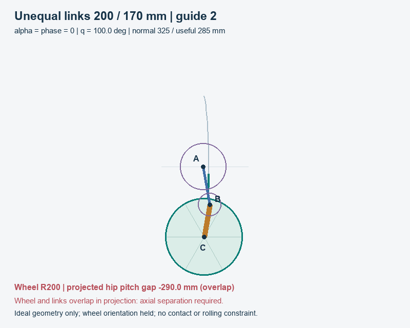
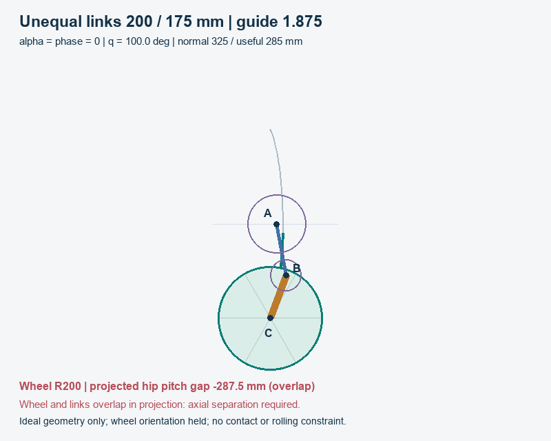
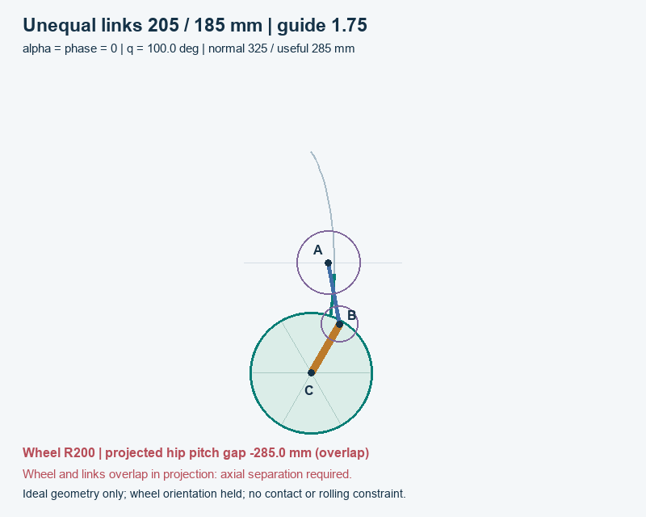
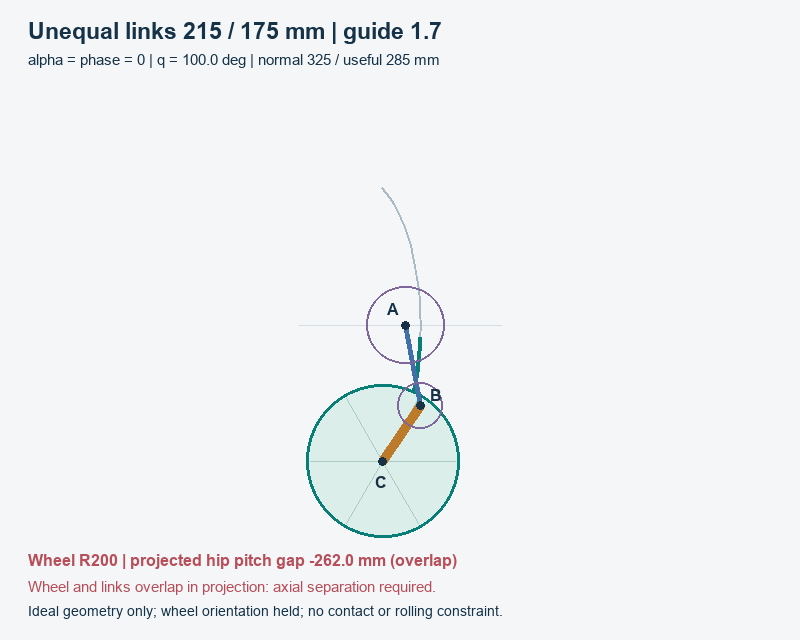

01 / UNEQUAL LINK STUDY
Upper-long links within 1.25x
Owner correction: longer /shorter <=1.25; alpha=phase=0; wheel R200 mm.
Yes, the upper link can be longer. These four rounded examples obey the new length constraint and provide 325 mm total vertical travel, including assumed 20+20 mm reserves: 285 mm useful. Their ideal height maps stay invertible through the fold. The earlier 160/475 mm proposal is outside this constraint and is superseded.
| Upper /lower mm | Length ratio | Guide r | Sideways mm | Hip peak Nm |
|---|---|---|---|---|
| 200 /170 | 1.176 | 2 | 24.62 | 40.30 |
| 200 /175 | 1.143 | 1.875 | 49.77 | 38.52 |
| 205 /185 | 1.108 | 1.75 | 76.31 | 37.50 |
| 215 /175 | 1.229 | 1.7 | 99.95 | 36.89 |
Balanced study seed: 200/175 mm, guide 15:8 (1.875). This gives 49.77 mm sideways movement with a 1.143 length ratio. The 205/185 mm, 7:4 alternative gives 76.31 mm and slightly lower static torque. All require axial wheel/link separation at the fold; none is a collision-free coplanar mechanism.
02 / UNEQUAL LINK STUDY
Curved paths through the fold
Full ideal q=100-260 deg; the 325 mm normal stroke is only part of this envelope.
| Upper /lower mm | Full height mm | Min Jz mm/rad | Useful hip ROM deg |
|---|---|---|---|
| 200 /170 | 728.8 | 64.25 | 59.32 |
| 200 /175 | 722.8 | 87.10 | 60.83 |
| 205 /185 | 724.2 | 104.97 | 61.46 |
| 215 /175 | 713.6 | 105.84 | 62.20 |
With a=L2,b=L3,t=q-pi,k=r-1: x=a cos(t)-b cos(kt); z=a sin(t)+b sin(kt). Jz is positive over the full envelope, so each height has one q through 180 degrees. The fold tangent is vertical; full endpoint sideways drift is zero by symmetry, despite nonzero lateral excursion.
At r=2 with unequal links, x=(a-b)cos(t), z=(a+b)sin(t): an ellipse. A 2:1 guide therefore remains a useful curved-path option. It becomes a vertical line only when a=b. Four labelled six-second offline GIFs below show actual wheel radius and the projected overlaps; they do not simulate rolling or collision.




03 / UNEQUAL LINK STUDY
Axial separation is necessary
Near-equal upper-long paths invert ideally; projected wheel and rod interference remains.
At the fold, B=(a,0), C=(a-b,0). For a>b, 0<a-b<a, so the wheel centre lies inside the upper segment AB. Its projected distance to that segment is zero at any scale. A flat coplanar wheel/upper-link layout cannot pass through this fold, even if hip-centre clearance alone looks acceptable.
| Upper /lower mm | Fold hip distance mm | Wheel /upper gap mm | Guide pitch surplus mm |
|---|---|---|---|
| 200 /170 | 30.0 | -200.0 | 20.0 |
| 200 /175 | 25.0 | -200.0 | 27.5 |
| 205 /185 | 20.0 | -200.0 | 40.0 |
| 215 /175 | 40.0 | -200.0 | 53.0 |
A negative wheel/upper gap means projected overlap. All rows pass the assumed 10 mm guide pitch-centre surplus a-60(r+1), with rb 60 and ra=60r; that guide check does not establish wheel, flange, shaft, belt or chassis clearance.
For a lower-long alternative, minimum wheel/hip and wheel/thin-upper-segment distance is b-a. Under the 1.25x limit, merely reaching 220 mm requires shorter link>=880 mm and longer>=1100 mm. Adding hip pitch radius requires still more. That is outside this compact 150-400 mm search. No searched candidate passes the full coplanar wheel clearance screen.
Proposed packaging direction: place wheel and links in separate axial planes, using an appropriate fork/offset/shaft arrangement. Rods also overlap in projection at the fold. Actual axial stack, tire width, chassis and outer hardware must be measured in CAD; physical full inversion remains unvalidated.
04 / UNEQUAL LINK STUDY
Force and control tradeoffs
Pure vertical equivalent corner load 110.3625 N =45 kg x9.81/4; no spring or moving-link inertia.
| Upper /lower mm | Peak /RMS Nm | Hip speed rad/s | Side-load peak Nm |
|---|---|---|---|
| 200 /170 | 40.30 /32.99 | 1.848 | 40.46 |
| 200 /175 | 38.52 /31.82 | 1.761 | 38.87 |
| 205 /185 | 37.50 /31.20 | 1.670 | 38.06 |
| 215 /175 | 36.89 /30.78 | 1.677 | 37.54 |
Holding magnitude is Fz Jz for the upward-load case; the signed balancing hip torque is -Fz Jz. Reducing maximum Jz improves worst vertical force per hip Nm. A smaller Jz at a given pose needs greater joint speed for the same vertical speed; peak speed depends on minimum Jz. Speed assumes constant vertical 0.25 m/s; side-load peak is a both-sign |Fx/Fz|<=0.3 assumed sensitivity.
Relative-knee torque is -tau_hip/r; relative-knee speed is -r times hip speed. Half-torque applies only at r2. Motor gearing is another mapping. Height-RMS equals time-weighted torque RMS at constant vertical speed without dwell; heating still needs motor/gear losses and actual duty.
Ideal useful lift work remains 31.453 J per leg in every case. Lower torque is mechanical advantage, not free energy. Total supported loads 3g and 4g multiply the static load term by 3 and 4; they do not predict impacts. Permitted sideways movement is not measured compliance: stiffness, contact, rolling and inertia are unresolved. No new spring or motor rating is selected.
05 / UNEQUAL LINK STUDY
Hard length limit, separate objectives
6,601,338 bounded geometry/window combinations; no weighted score or R2 method.
L2 and L3=150-400 mm in 5 mm steps; max/min<=1.25 and |L2-L3|>=5 mm. Guide 1.2-2.6 in 0.005 steps plus exact 5/3. Normal q start 100-140 in 5 degree steps; end solves 325 mm height and must be<=175. Full 100-260 requires Jz>=5 mm/rad. Sideways excursion 25/50/75/100 +/-2.5 mm, without reversal.
Upper-long and lower-long families are ranked separately. Hard constraints come first; minimize useful peak Jz and total link sum as separate objectives. Coarse 33 poses retain eight candidates per bucket; finalists get continuous derivative-extrema checks and 2001-pose integrals. Finite grid and retained pool do not prove a global or manufacturing optimum.
| 50 mm comparison | Upper /lower, r | Hip peak Nm | Length ratio |
|---|---|---|---|
| Upper-long force leader | 190/185, 1.815 | 37.26 | 1.027 |
| Rounded 15:8 example | 200/175, 1.875 | 38.52 | 1.143 |
| Upper-long size leader | 200/170, 1.88 | 38.19 | 1.176 |
| Lower-long force leader | 180/210, 1.715 | 36.13 | 1.167 |
Useful ROM uses height roots z^-1(zstart+20) and z^-1(zend-20). For 200/175,15:8, total q=100-174.083 deg; useful hip ROM 60.829 deg. Do not subtract 20 degrees for 20 mm. Rounded ratios balance readable parameters, compactness and lateral target; their somewhat higher torque than the grid force leaders is reported explicitly.
06 / UNEQUAL LINK STUDY
Checks and next design decision
Ideal inverse verified; collision-free axial packaging and loaded dynamics remain open.
23 numerical tests pass, including seven unequal-link tests. 7,440 original Jonathan V2/Andy 2D scalar comparisons across 20 cases agree, maximum 1.705e-13 mm/Nm. The 1.25x constraint and upper-long fold overlap have explicit regression checks. Independent read-only review confirms the four rounded examples and ellipse relation.
| Actual Pymunk case | 2 ms mm | 1 ms mm | 0.5 ms mm | 0.25 ms mm |
|---|---|---|---|---|
| upper25 | 0.08461 | 0.04200 | 0.02093 | 0.01044 |
| upper50 | 0.07441 | 0.03694 | 0.01840 | 0.00919 |
| upper100 | 0.07279 | 0.03614 | 0.01801 | 0.00899 |
Actual positive-mass motor/pivot/gear constraints generate the three angular sweeps; only initial poses are assigned. The compact evidence retains every timestep and unchanged tolerance result, including coarse failures if present. Zero gravity/forces and no collision shapes mean geometry evidence, not validated loaded torque, contact, compliance, impact or physical inversion.
Start CAD with 200/175 mm, guide 15:8 for approximately 50 mm sideways movement, or 205/185 mm, 7:4 for about 75 mm. Both fit the required length relation. Their normal strokes approach the assumed 175 degree guard; inspect actual stop and buffer tolerances rather than treating these limits as measured hardware.
The earlier broad search recommended 160/475 mm before the owner clarified the 1.25x limit. That recommendation is superseded; its historical evidence remains in the preceding local revision and contribution log. This report now applies the constraint to every retained case. Existing Motion Lab models, earlier reports/spring cases and historical dual-rope IMPOSSIBLE /rejected stay intact.
Reproduction commands, source hashes, exact assumptions and validation history are in docs/unequal-inversion-study.md and docs/validation.md. The manual launcher opens this static file with adjacent GIFs; no server or new Motion Lab control is needed. Source base aaed324; workspace scope; canonical physics NOT APPLICABLE.